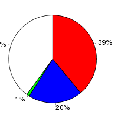
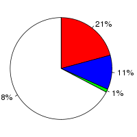

Arabidopsis thaliana (Arabidopsis thaliana, TAIR10) and Sorghum bicolor (Sorghum bicolor, Sorbi1) were aligned using the BlastZ alignment algorithm (Schwartz S et al., Genome Res.;13(1):103-7, Kent WJ et al., Proc Natl Acad Sci U S A., 2003;100(20):11484-9) in Ensembl release 76. Arabidopsis thaliana was used as the reference species. After running BlastZ, the raw BlastZ alignment blocks are chained according to their location in both genomes. During the final netting process, the best sub-chain is chosen in each region on the reference species.
Full list of pairwise alignments| Gap open penalty (O) | 400 |
| Gap extend penalty (E) | 30 |
| HSP threshold (K) | 3000 |
| Threshold for gapped extension (L) | |
| Threshold for alignments between gapped alignment blocks (H) | |
| Masking count (M) | |
| Seed and Transition value (T) | 1 |
| Additional parameters | |
| Scoring matrix (Q) | Default |
Number of alignment blocks: 80370
| Genome coverage(bp) | Coding exon coverage (bp) | |
|---|---|---|
| Arabidopsis thaliana |
|
 |
| Covered: 26,626,193 out of 119,667,750 | Matches: 13,002,931 out of 33,462,323 | |
| Uncovered: 93,041,557 out of 119,667,750 | Mis-matches: 6,575,316 out of 33,462,323 | |
| Insertions: 374,787 out of 33,462,323 | ||
| Uncovered: 13,509,289 out of 33,462,323 | ||
| Sorghum bicolor |
|
 |
| Covered: 18,742,535 out of 738,540,932 | Matches: 8,335,952 out of 40,003,363 | |
| Uncovered: 719,798,397 out of 738,540,932 | Mis-matches: 4,217,871 out of 40,003,363 | |
| Insertions: 310,629 out of 40,003,363 | ||
| Uncovered: 27,138,911 out of 40,003,363 |